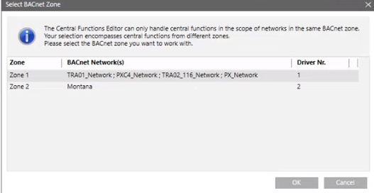
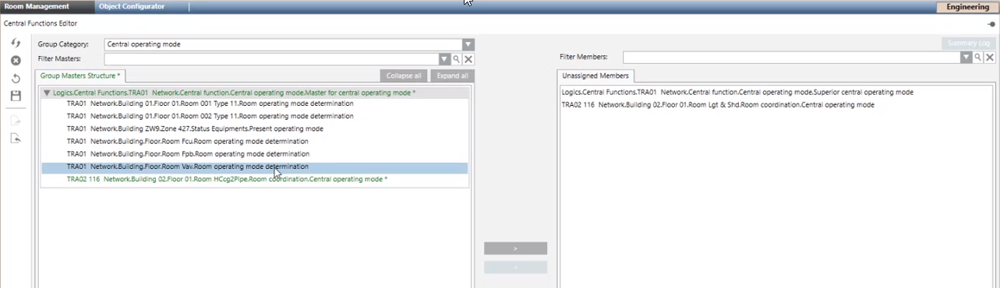
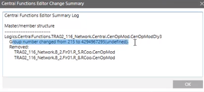
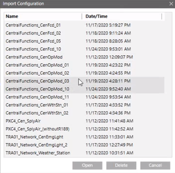
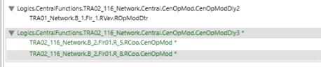

Configure Central Room Functions
Color Code in Group Master Dialog | ||
Color | Type | Description |
Black |
| The central room configuration is correct. |
Blue1 | Group master | Group master is not configured (the group number is not defined). Configuration in Desigo CC is not possible. The ABT project must be checked and corrected. |
Red1 | Group master | Engineering error, possibly no group member is assigned a group master or was deleted during engineering. |
Green | Group master | Changed, but not yet saved. |
Green | Group member | Changed, but not yet saved. |
1 Incorrectly configured group masters increase network load (Broadcast).
Edit Central Functions
- The Room management editor is enabled in your user group rights.
- Desigo Automation data is imported.
- Desigo automation stations are online.
- System Manager is in Engineering mode.
- In System Browser, select Application View.
- Select Applications > Room management > Central Functions Editor.
- Select the Room Management tab.
- The Central Functions Editor opens.
- Below Logic > Central Functions the corresponding object hierarchy.
- (Alternative) On a PXC4 automation station, select Logical View and then the hierarchy level Central Functions.
- Drag the selected object to the Group Master Structure dialog box.
- (Optional) Assignments must be within the same driver in the event of multiple networks and drivers. Select the appropriate driver and click OK.

- Group masters and group members are displayed in the Group Master Structure and Unassigned Members dialog boxes.
- (Optional) Clear display
 deletes the broup master structure from the view. No changes are written to the automation station. Previous changes are lost.
deletes the broup master structure from the view. No changes are written to the automation station. Previous changes are lost. - Change or remove the group assignment.
Assigning Group Members
NOTICE

Loss of Data during Download with ABT Site:
Edited group assignments are reset to the state of the last engineering data when downloading from ABT Site. Changes made by the management platform are lost and can no longer be restored.
- Present project data must first be imported back to ABT Site.
- Only then can the engineering data be re-downloaded with ABT Site.
- Use the export and import functions in the Central Functions Editor to avoid potential loss of data.
- In the Group category drop-down list, select the appropriate group category.
- (Optional) Use Filter master to limit the view in the Group Master Structure dialog box.
- Select the group master in the Group Master Structure dialog box.
- (Optional) Use Filter members to limit the view in the Unassigned Members dialog box. Using this filter also limits the view in the Group Master Structure dialog box.
- Select one or more group members in the Unassigned Members dialog box and click
 or drag it to the group master.
or drag it to the group master. - The group member is assigned to the group master and highlighted in green.
NOTE: They must be located on the same device if using a local group master and local group members.
- (Optional) Use Undo
 to correct a wrong assignment. You can also Refresh
to correct a wrong assignment. You can also Refresh  to reset the view to the state at the first drag and drop.
to reset the view to the state at the first drag and drop. - Click Save
 .
. - The defined configuration is saved on the Desigo automation station.
- Displays a success or error message.
- Click OK.
- Click Summary log.
- All edited data is displayed.


Use the filter function to reduce the amount of unassigned group members for example 114 for the group member of room number 114.
Removing Group Member Assignments
- In the Group category drop-down list, select the appropriate group category.
- Select one or more group members in the Group Master Structure dialog box and click
 .
. - The group member is no longer assigned to the group master and highlighted in green.
- (Optional) Use Undo to correct a wrong assignment.
- Click Save .
- The edited configuration is saved on the Desigo automation station.
- Displays a success or error message.
- Click OK.
- Click Summary log.
- All edited data is displayed.
Unassigned members are automatically set to Out of Service.
Export Central Room Configuration
The export function can save the displayed view and import it at a later date. We recommend using it as part of the handover to the customer.
- In the Group category drop-down list, select the appropriate group category.
- Click Export
 .
. - The Export Configuration dialog box opens.
- Apply the default name or change as needed.
- Click Save.
- The data is saved in the project [Installation Drive]:\[Installation Folder]\[Project Name]\devices\CFE_Configuration\[File name]. Do not change the project path to the files since the import function accesses this path.
- Click OK. The information dialog closes.
The data must be saved for each category. As part of the project handover to the customer, backup the data to the node Central Functions for each category.
Import Central Room Configuration
The saved room configuration can be imported in the event of a wrong configuration; this restores a previous state. Unneeded room configurations can be re-deleted.
- Click Import
 .
. - The Import Configuration dialog opens.
- Select the corresponding file.

- (Optional) Select Delete to delete unneeded room configurations.
- Click Open.
- The data is imported to the room management editor.
- Click OK.
- The information dialog closes.
- Differences to the existing configuration are highlighted in color.

- The data is not yet changed on the automation station.
- Click Save .
- The edited configuration is saved on the Desigo automation station.
- Displays a success or error message.
- Click OK.